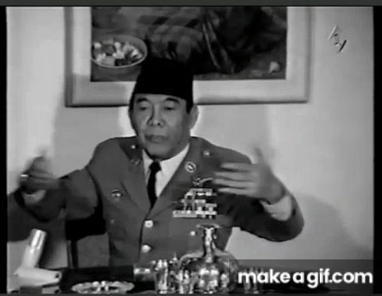
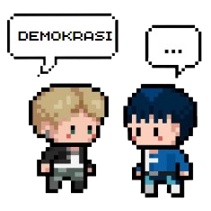

˗ˏˋInfo ★ Umumˎˊ˗ Tujuan Demokrasi

DEMOKRASI
Demokrasi diambil dari… :
Demos (rakyat)+ Kratelin (pemerintahan)
Jika diterjemahkan secara langsung, demokrasi adalah pemerintahan rakyat, yang diselenggarakan oleh rakyat, semua untuk kepentingan rakyat, dan dilaksanakan oleh rakyat (dari, oleh, untuk rakyat)
Demokrasi mengijinkan dan memberikan hak serta kebebasan kepada warga negaranya untuk berpendapat serta turut berpartisipasi dalam pengambilan keputusan di pemerintahan.
Menurut Rule of Law Budiarjo (2003), Syarat dasar untuk terselenggaranya pemerintah yang demokratis meliputi:
1. Memberikan kebebasan serta keadilan dalam berpendapat dan berekspresi.
(Mendorong masyarakat untuk lebih aktif dalam pemerintahan,memicu kinerja pemerintahan suatu negara. Tiap warga negara juga akan membuat mereka lebih bertanggung jawab dalam berperan menjaga keutuhan negara)
2. Membatasi Kekuasaan Pemerintahan
(Kekuatan tertinggi sistem demokrasi ada di tangan rakyat. Menciptakan pemerintah yang bertanggung jawab, dan tidak menimbulkan kekuasaan absolut atau diktator)
3.Mencegah Perselisihan dan Menciptakan Keamanan dan Ketertiban
(Hak-hak setiap warga terjamin dan pengedepanan musyawarah untuk penemuan solusi dapat menjalin keamanan dan menyelesaikan masalah secara damai.)

Macam Demokrasi
Contoh sikap Demokrasi :